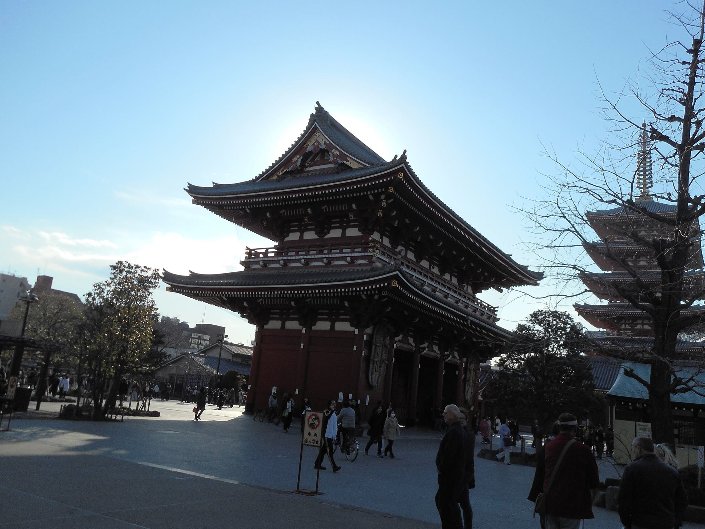

cliquer sur les photos pour voir la galerie correspondante
 galerie photo présentant divers clichés de Tokyo au Japon lors de ma visite en Juillet 2016.
 galerie photo présentant divers clichés de la chaine des puys en Auvergne lors de mes passages.
galerie photo présentant divers clichés de la chaine des puys en Auvergne lors de mes passages.
 galerie photo présentant divers clichés de Séoul, du mont Bukhansan en Corée du Sud lors de ma visite en Juin 2017.
galerie photo présentant divers clichés de Séoul, du mont Bukhansan en Corée du Sud lors de ma visite en Juin 2017.
 galerie photo présentant divers clichés du chemin de Compostelle lors de mon pellerinage en été 2018.
galerie photo présentant divers clichés du chemin de Compostelle lors de mon pellerinage en été 2018.